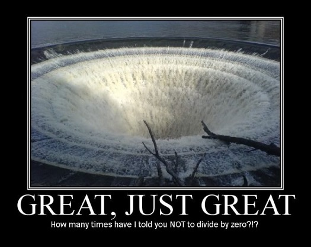
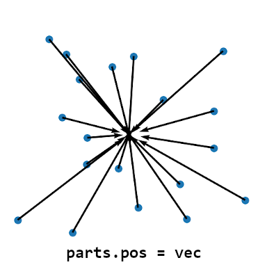
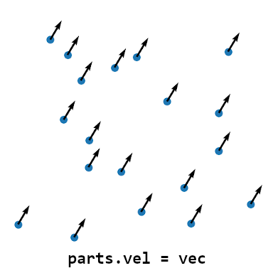

Up to this point, we have seen effects that may have been great for adding some extra eye-candy to you level, but were otherwise ambient and didn’t have much influence on the world around them. Starting from this chapter, we will be implementing particles that exhibit complex, dynamic behavior and can have tangible effects on the game itself, beyond just the graphical qualities they provide. Particles, which can be characterized by reactivity and/or interactivity (with Lara, other entities or the room geometry). This is made possible thanks to update functions, which allow to define the behavior a particle group will exhibit. This mechanism permits the particles to act in a user-defined way and have unique attributes (such as colliding with the environment, setting Lara on fire, doing damage on contact with an enemy, homing onto a target, etc).
More than anything else, it is this ability to code custom behavior which sets apart the particles offered by this plugin from the particles you have seen before, in FLEP or the classic engine. The incredible flexibility provided by update functions in tandem with the various API functions allows one to script things ranging from new traps, new weapons and attacks for both Lara and her foes, magical abilities, unique puzzles, never seen before gameplay mechanics, the list goes on.
This feature is very powerful, but as we all know, “with great power comes great responsibility”. It can easily lead to some disastrous results (including but not limited to: crashing the game) if you are not being cautious, so tread carefully.
In the first section of the chapter, we will return to the previously neglected update function of the dust effect from Chapter 1. This time around, I’ll give a proper explanation of update functions and how to write a simple one that makes the particles animate.
Afterwards, we will learn of the t-parameter property of particles, which allows to correlate a particle’s age with another property through some mathematical formula. A specific example of this will be given in the section on shaping particle trajectories. We will also revisit the t-parameter in context of explaining how the sizeCust and colCust override fields work.
There is an optional bonus chapter at the end that dives deeper into the trajectory-shaping topic and explains how you create parametric formulas for velocity in general, by applying differentiated functions.
Similarly to Chapter 1, this chapter is also split into two halves for convenience, otherwise it would make for a very long read.
Back in Chapter 1, when we created our dust particle effect, we started writing an update function for it. However, we quickly abandoned it when it became apparent that we don’t need it for our dust effect.
Don’t worry, we will be bringing that poor little update function back from oblivion now! Let’s recall the entire dust module script, including the (then commented out) dustUpdate() function:
local dustgroup
local function dustInit()
local part = createSpritePart(dustgroup) -- create a sprite particle of the "dust" group
part.emitterIndex = getLaraIndex() -- get Lara's tomb4 index
part.lifeSpan = 30 * 4 -- 30 frames * 4 = 4 seconds
part.sizeStart = randint(150, 300)
part.sizeEnd = part.sizeStart * 3 -- make dust slowly expand over time
part.spriteIndex = 0 -- "smoke" sprite texture
part.fadeIn = 30 -- fade in for 1 second
part.fadeOut = 30 -- fade out for 1 second
-- randomize rot and rotVel
local degrees = randint(0, 359)
part.rot = degToRad(degrees)
local rotspeed = randomNegate(randfloat(2, 4)) -- generate a random value between 2 and 4, negate it half of the time
part.rotVel = degToRad(rotspeed)
end
--[[
local function dustUpdate(part)
end
--]]
-- creation of our particle group and assigning it to the variable
dustgroup = createGroup(dustInit, nil) -- passing nil in place of our dustUpdate
Recovering the update function
First things first, we’ll uncomment the dustUpdate() function. We can do this either by removing the multiline comment tags or adding an extra minus to the opening comment tag, ---[[ . Both ways are acceptable, it will opt to simply remove the comment tags altogether. The next step is to restore dustUpdate as the second argument to createGroup(), in place of the nil value we put before:
local function dustUpdate(part)
end
-- creation of our particle group and assigning it to the variable
dustgroup = createGroup(dustInit, dustUpdate) -- restored dustUpdate as second argument
By the way, I feel like I should explain why I generally write the parentheses after the name of a function, e.g. dustUpdate(), but specifically when speaking of passing the function as an argument to a function like createGroup(), I drop the parentheses, i.e. dustUpdate.
This inconsistency is not by mistake or due to negligence. When I write the name of a function generally, I add the parentheses to emphasize it being a function (and not an ordinary variable). However, when I talk of passing a function as an argument to another function, I deliberately omit the parentheses after the name. This is because attempting to pass the function with parentheses to its name, like for example:
dustgroup = createGroup(dustInit(), dustUpdate() ) -- this is incorrect!
is improper syntax in Lua. In the above snippet, we are no longer passing the dustInit() and dustUpdate() functions as arguments, but rather calling each function without any arguments, then passing the returned values (or rather lack thereof, since neither should return anything according to our rules!) as the actual arguments passed to createGroup(). If the functions were to return something, like a number, we would be passing that returned number as an argument to createGroup() (this is not what createGroup() is expecting to receive as arguments, the plugin will complain). If the functions do not return anything (as is in our case), it is the same as passing nil instead of the function. Effectively, the createGroup() call turns into createGroup(nil, nil). This is the same problem as we had by not respecting the correct order of the code back in Chapter 1, if you remember.
If this does not make sense to you with the above explanation, it may help to look at this from another angle. Remember when I said that function names are really disguised variables? This means that the variable is storing a value. What value, exactly? The definition of some function (this is an oversimplification, but assume that’s what happens when you ask for a function’s “value”). When we want to pass a Lua function as an argument, we want to pass its value (the definition), and not its result, so we are treating it as we would any other variable that holds a value. To simply get a value from a variable, we don’t use parentheses, right?
To emphasize the difference between calling functions and passing them as arguments, I will omit the parentheses to indicate that a function will not be called, but rather passed as an argument to another function (i.e. treated as a variable with a value). In all other cases, I’ll refer to the function with parentheses attached to its name.
How update functions work
Coming back to our group definition, we are now constructing our group with both an init and an update function. Of course, our update function is not doing anything at the moment. But before we do that, we should first be able to answer the question – what are update functions?
I already mentioned a few times by now that the update function expects a single argument, a particle instance. The function argument’s name becomes an alias for the particle instance it is currently working on. We can choose whatever alias we want, really, but in these tutorials we always use the name part.
But wait, – you might ask – doesn’t that go against the rule of not using an identical name for another variable in the script? After all, we’ve already used part as a name for the variable in the dustInit() function…
Fret not, in this case it doesn’t matter. The reason why it’s okay to used the name part in both the dustInit() and dustUpdate() functions is because these are, in fact, two unrelated variables. Both are enclosed within the scope of their respective functions (one being the init, the other being the update), not in an outer scope of the script, like the dustgroup variable, for example. If we were to use part more than once in the main script scope, outside of all functions, if blocks and for loops, then indeed we would be dealing with a name collision and could run into problems. But in our case, the part variables are occupying two different locations in the code and Lua is smart enough to recognize that these are not identical, but completely distinct variables that just happen to use the same name in their respective scopes (one scope is the init function, the other scope is the update function). If you want to be extra careful though, you may of course use a different name in the update function. Just use another short one for your own sake, unless you love typing a lot.
Anyway, what purpose does the argument part serve to dustUpdate()? Simply put, part is one of the particles belonging to the group. During each in-game frame, the particle system iterates through all currently existing particles and, on top of performing generic updates to each of those particles (like updating their positions or decreasing their life counters), it calls the update function we assigned to the group (unless nil was used in its place, that is), passing the current particle through the part argument.
Given that update is called for each of the particles in the group, part becomes the alias of the specific particle on which the update function was called. This way, every particle in the group has the opportunity to be modified by its designated update function on each game tick. In our update function, through the part alias, we have access to the particle’s properties, including all of the properties we have talked about in the chapters prior to this one. We can then inspect or change the particles’ positions, velocities, rotations, sizes, colors, so on and so forth, to our own will and liking!
Okay, enough of the exposition, already. Time to make the update function actually do something with our particles!
How about this – for testing purposes, we make the particles change their sprite texture on every frame. They will start out with part.spriteIndex = 0 in the init function, then keep iterating through the different textures from DEFAULT_SPRITES in the update.
The update function should look something like this:
local function dustUpdate(part)
part.spriteIndex = part.spriteIndex + 1
end
Nothing too sophisticated, as you see. We are getting the current value of part.spriteIndex, adding 1 and assigning this new value back to spriteIndex. Easy, right?
Let’s run the game and see what we have. We launch the level and…
Indeed, all of the particles animate through the sprite textures, but only once, then they stop at the last texture! Not only that, but if we enable the console to see what’s going on behind the scenes, we’re being bombarded with warning messages:
Don’t worry, we can fix this. We have just blundered with the above code for increasing the part.spriteIndex, that’s all. To learn why this doesn’t work, let’s inspect the DEFAULT_SPRITES object in WadTool, WadMerger’s sprite editor or the sprite tool in NG Center (on the first Tools tab). If you are using an unmodified DEFAULT_SPRITES, we can see that there are 33 textures, indexed 0 to 32.
The particles first have texture 0, as we indicated in the init function. The update function makes part.spriteIndex move to texture 1, then 2, then 3… if we continue this pattern, we eventually reach the last texture at index 32. What happens during the update that point? The index will increase to 33, but… there is no texture with that index number in the DEFAULT_SPRITES!
This situation, if left unmanaged, would result in a nasty crash, since the Tomb4 engine would not know how to handle it. However, as we have just seen, the particles simply stop updating their texture upon reaching the final one, why is that? This is a protective measure within the plugin. To ensure that this crash never occurs, if the part.spriteIndex goes beyond the number of existing sprite textures, the plugin sets it back to the highest possible texture index. Consider it a kind gesture from the plugin developers… ;)
But you probably don’t want the particle to animate only a single time and stop, it would be better if this animation would repeat over and over again!
Since the number of textures in (unmodified) DEFAULT_SPRITES is 33 and we want the update function to keep going through all the indices 0-32, but never go above 32, there is a specific arithmetic operator that solves this exact problem. Do you remember which one? I hope you had the modulo operator % in mind. If you did not, then… nothing, just remember it from now on!
We first need to put the expression where we increment the sprite in parentheses. As you recall from mathematics, when something is in parentheses, that calculation is performed first. After the closing parenthesis we place the modulo operator % with the total number of sprite textures in DEFAULT_SPRITES (33) as the dividend:
local function dustUpdate(part)
part.spriteIndex = (part.spriteIndex + 1) % 33
end
Let’s try running it in game again.
Problem averted! Though the aesthetic quality of such particles is questionable, we see they loop flawlessly through all of the textures in DEFAULT_SPRITES.
You can actually use this approach to make particles animate through a looping sprite sequence (and not a bunch of unrelated sprites as in our example). However, I’ll soon demonstrate a function called particleAnimate() that does this for us and allows to set both the exact range and the framerate for this animation.
As you know by now, a particle has two life properties. The first one, part.lifeSpan, as the name implies, describes the total amount of life the particle has. The other life property, part.lifeCounter, counts down the remaining life of the particle. In the init function it is implicitly assigned the same amount as part.lifeSpan, but afterwards is automatically decreased by 1 on each game tick. Once part.lifeCounter reaches 0, the particle dies and is no longer updated or drawn by the particle system.
Let’s ponder for a moment about the following. Assume we wanted to have a general way to describe a particle’s “age”, regardless of its actual lifeSpan or lifeCounter value. Something of a percentage of elapsed life. How could we do that?
Instead of using the particle’s part.lifeCounter values, we instead imagine such “age” as a decimal value between 0.0 and 1.0 (i.e equivalent to a percentage between 0% and 100%). At 0.0, the particle has been newly born into the world. At 1.0 (100%), the particle reached the end of its life and ceases to exist. All in-between values describe the percentage of how far a given particle is into its life course, regardless of the actual lifeSpan and lifeCounter the particle in question has. For example, a value of 0.5 would mean that the particle is halfway through its existence (and likely experiencing a mid-life crisis).
Jokes aside, having the lifeSpan and lifeCounter values, how do we obtain this “current lifestage” percentage value? It’s actually a pretty simple calculation of the form:
age = (part.lifeSpan - part.lifeCounter) / part.lifeSpan
We just subtract part.lifeCounter from total part.lifeSpan and divide the result by part.lifeSpan again. This value will always be somewhere between 0 and 1, regardless of how big or small lifeCounter and lifeSpan really are (that is, unless you tamper with the part.lifeCounter value, which you should not do, as we will learn in the section about immortal particles).
Fortunately, we don’t have to carry out this calculation ourselves whenever we want to use this value. Particles provide a special read-only property called the t-parameter, with the field name part.t (that is, a single lowercase t), which gives this 0 to 1 age fraction value for the particle:
part.t -- read-only property, gives a 0 - 1 normalized age for the part
Okay, that’s great and all, but what would this t-parameter even be useful for?
Well, picture the following situation. You would like another particle property, like its size, color or velocity, to depend on this “lifestage” value in some way. Since it’s always in the predictable range 0 to 1 (unlike part.lifeCounter values), by applying some math you can come up with a formula that translates the 0-1 value of part.t to a value usable for the size, color or velocity.
You may say that for velocity we already have a way to change it without using an update function, which would be using acceleration. I say – okay, but what if we want the particle move in a circular orbit? This involves a continuous change in acceleration (along with velocity and position) over time, we can’t just set the part.accel vector in init and be done with it. This forces us to use an update function, no way around it.
Here’s where the t-parameter can shine – since its value is guaranteed to be between 0 to 1 and increases at a constant rate as the particle gets older, we can create an equation that makes the velocity depend on this t-parameter in some way.
Perhaps you still don’t see the full picture of all of this. Well, let’s see an example in the next section!
We will now entertain a scenario in which we want the particle velocity to depend on the age percentage in some way. The specifics of it are entirely up to us. If you need a suggestion, what about using the trusty trigonometric functions, sin() and/or cos()? To come up with a velocity formula, we’ll utilize what we know of the t-parameter. Considering it has a 0-1 range, regardless of the particle life span, we can perform mathematical operations on the value given by part.t to end up with a velocity corresponding to the current age of the particle. The sin() and cos() functions are continuous (without any gaps) and periodic (repeating). They repeat with an interval of 2π (2*pi) radians and smoothly oscillate between values of 1 and -1. If this language didn’t speak to you, or perhaps you’re blanking out because you have not dealt with any of this in a long time, look at the graphs of both functions below, they should jog your memory:
The function graphs look mostly identical, the difference is that cos() is shifted in regards to sin(), since the peaks and valleys do not line up with each other (we say that cos() is phase shifted by π/2 compared to sin(), i.e. cos(x) = sin(x + π/2)). Another implication of this is that the “cycle” (formally referred to as the period) for sin() starts at the output value 0, whereas for cos() it starts at 1. Apart from those two features, the functions are very similar in how they behave, having both the same amplitude and frequency. We can take advantage of these characteristics to make particles move in “squiggles” or “waves”, for instance.
Waving particles
To achieve an undulating “wave” of particles, we can give particles a Y velocity derived from the sine function output given an input of part.t, paired with a constant (unchanging) velocity for one (or both) of the horizontal axes, X and Z. This sounds a lot scarier than it actually is, you’ll see.
Given the below orangish-pink particles with a part.lifeSpan of 240 (8 seconds), spawning from an emitter item with NGLE index 3:
local wave
local function waveInit()
local part = createSpritePart(wave)
local dx = randfloat(-512, 512)
local dy = randfloat(-64, 64)
local dz = randfloat(-64, 64)
part.pos.x = dx
part.pos.y = dy
part.pos.z = dz
end
we’ll come up with an update function which modifies the Y velocity component using the sine function. We use part.t inside the sin() function, as so:
local function waveUpdate(part)
part.vel.y = sin(part.t) -- velocity derived from the sin() function
part.vel.z = -20 -- constant Z velocity
end
wave = createGroup(waveInit, waveUpdate)
As you see, in the waveUpdate() function we’re setting a Y velocity via the formula -sin(part.t) and for the Z velocity we set the constant value -20.
We give it a run in game, and uhh…
the particles aren’t really waving that much, but moving in a rather straight line. Because the raw value of part.t is between 0 and 1, maybe it’s too small for the wavy nature of sin() to become apparent? We should make it larger.
Since trigonometric functions anticipate radians as input, a good start would be to multiply part.t by 2*π, the interval of the sine function. By doing so, the particles should at least complete a single “wave”. For our purposes, we will take the well-known approximation of pi, 3.14.
We’ll make the following modification for calculating the Y velocity in the waveUpdate():
part.vel.y = sin(part.t * 2 * 3.14)
Erm… still no evident waving. Let’s remind ourselves that sin() and cos() functions return values in the -1 to 1 range, making the resulting Y velocity oscillations very tiny. Let’s turn it up a notch by multiplying the returned result by 20 (or something in that ballpark).
part.vel.y = sin(part.t * 2 * 3.14) * 20
Okay, now we’re able to see something! The wave shape is more pronounced, at least.
If you are paying close attention, assuming that we are looking at the traced curve as if it started out at the origin point (0, 0) on the graphs above, you may notice the shape of the curve does not match up with the graph for sin(x), despite us using the sin(x) function. No, the functions didn’t get mixed up with one another, there are different reasons for this.
Reason number one: in the TR engine, the direction for the Y axis is inverted, so as it decreases to lower and more negative values, you go higher up. That’s an easy fix, we just need add a minus in front of the call to sin(), in order to negate the output. But, that’s not all.
The other reason why it does not match up with the sin(x) graph is because we are modifying the velocity (rate of change to position) of the particles, rather than position directly. We cannot simply reapply the formula we’d use for position, as if it were the formula for velocity, because in the majority of cases, the result will be vastly different. The reasoning behind it is a mathematical concept known as calculus. I give a very brief overview of it in the bonus section on parametric expressions (at the end of this chapter). But I will not bother you with it right now, all you need to know is that if we want the shape of the curve to match up with sin(x) when we are modifying the velocity and not position, we should actually use the cos() function. So the expression changes to:
part.vel.y = -cos(part.t * 2 * 3.14) * 20
Nice, we finally have a proper wave of particles. One interval is a bit boring, though, so let’s squeeze in more of them. The way to do that is very simple. Instead of multiplying part.t by 2π, multiply it by 6π, which should result in 3 complete intervals during each particle’s life:
part.vel.y = -cos(part.t * 6 * 3.14) * 20
Ah, wonderful!
Animating the wave through time
What if we went a step further and made the wave shape animate over time? It's easy to achieve, we need to add a time variable into the expression. And by time variable, I mean getGameTick(). Unfortunately, the raw game tick value will increase way too fast to achieve a nice effect. We can downsize it by a factor of, say, 0.002, then add it to part.t inside parenthesis, before scaling it by 6π:
local time = getGameTick() * 0.002
part.vel.y = -cos((part.t + time) * 6 * 3.14) * 20
Voilà!
I’ll share a neat tidbit with you - you don’t actually need to remember the value of π to use it in scripts. You can obtain its value (well, a very good approximation) by typing the constant PI, in all-caps. With this, the formula can be rewritten as:
part.vel.y = -cos((part.t + time) * 6 * PI) * 20-- using the PI built-in constant
Lua will step in and convert the PI constant to the (approximate) π value when parsing the script. There are a few more variants: PI_HALF (pi/2), PI_THIRD (pi/3), PI_QUART (pi/4) and PI_TWO (pi*2).
Hopefully, the concept of shaping particle trajectories by using part.t is not too complicated to grasp. You just need to know what mathematical calculations to use with part.t to get your desired shape, which depending on your expertise in maths, can get tricky. The bonus section at the end of the chapter delves deeper into this topic. If that’s not something that really interests you, proceed to the next section on particle sizeCust and colCust properties.
When it comes to the particle size and color properties, there are respective _Start, _End and _Cust variants for them. All the way back in Chapter 1, when we learned about about these properties in context of init functions, I said that only the _Start and _End variants are important in init, while the _Cust variants are only useful in update functions. Since update functions are now our topic of interest, it’s time to cover the _Cust variants as well.
_Start and _End property variants (for size and color) were used in init functions to indicate the initial and final values (respectively) of a particle property. A particles size would be somewhere between part.sizeStart and part.sizeEnd, depending on the age of the particle. Side note: do you see the connection with the t-parameter here? It is also involved in determining the current size from the Start and End values. The formula for it, carried out inside the plugin, resembles something like this:
Side note: the general expression of the form c = a * (1-t) + b * t (where t is between 0 and 1) is known as a linear interpolation, or a lerp. I am bringing your attention to it, because it’s very useful and we will be encountering it quite often, in the form of the API function lerp().
The same speech applies to how part.colStart and part.colEnd behave. The current color of the particle is linearly blended between these two colors depending on how old the particle is.
What are the _Cust fields for, then? If we do not make any assigments to them, they simply carry the blended (_Now) values of the properties they represent. However, when you assign some value, like a size to the particle’s sizeCust field or a color to the colCust field, this will result in overriding the blended size (or color) calculated from the start and end values.
Importantly, this overriding of the value is valid for only one frame when it has been assigned. Afterwards, the particle system sets the size (color) with the re-calculated blended value for the next frame again. This is why assigning to _Cust variants in init is pointless, as we need to override the blended values from the particle system on every frame to see the result. Fortunately, this job can be perfectly fulfilled by the update function, whose job it is to change particle properties on every single frame.
Modifying sizeCust
You can combine the knowledge regarding the t-parameter and part.sizeCust to make the size of a particle depend on the “lifestage” given by the part.t. For example, making the particle dynamically grow and shrink.
In my opinion, dealing with part.sizeCust is rather straightforward, you just assign the size values, given by your custom formula, in update. Below is a simple example:
local t = part.t * 20 * PI-- pre-multiply the t-parameter and save it in a var
part.sizeCust = sin(t) * 100 + 150 -- oscillates size between 50 and 250
We are getting part.t, multiplying it by PI * 20 and saving it to a variable local t. The multiplication factor 20*π, should result in 10 full oscillations of the sine wave during the particle lifeSpan. We then take the local t value and pass it to sin(). The result of sin(t) is multiplied by 100. This should give a value in the range <-100, 100>. Particles cannot have negative size though, so we add 150 on top of that, shifting the oscillation range to <50, 250>. We assign this final result to part.sizeCust. This should result in the particle nicely oscillating its size, in 10 cycles, between 50 and 250.
What would be the difference if we used the value of getGameTick() instead of part.t? Well, since the game tick is uniform and not unique to each particle, all the particles would be synchronized with each other, growing and shrinking at the same time. Differently, part.t will give the individual age of each particle, so they grow and shrink independently of each other.
The remap function
When it comes to moving a value from one range to another, like we just witnessed in the last example:
scaling part.t from <0, 1> to <0, 20π>;
moving the output of sin(t) from <-1, 1> to <50, 250>
there comes a very handy little function from the API, called remap(). It requires 5 arguments in total:
remap(x, oldMin, oldMax, newMin, newMax) -- remaps argument "x" from <oldMin, oldMax> to <newMin, newMax>
To call this function, we must specify the x value which will be remapped, the original min-max range of the x value with the pair oldMin, oldMax, then finally the new range, via newMin, newMax.
We must do two remappings. The first one, to scale part.t by 20π:
local t = remap(part.t, 0, 1, 0, 20 * PI) -- remap part.t to <0, 20π>
and then the second one, take the output of sin(t) from <-1, 1> to <50, 250>:
These remap function does the same thing as the mathematical calculations from before, but I think it simplifies obtaining the correct values, as you do not need to think about how much to multiply and add to get your expected result. The only caveat is knowing what the original range of the remapped x value is. For part.t it’s <0, 1>, while for the trigonometric functions, sin() and cos(), the range is <-1, 1>.
Modifying colCust
Changing particle size on the fly is really neat, but changing colors is even cooler! I will show an example of modifying part.colCust by using another great function from the API, colorHSV().
HSV Color Space
The function colorHSV() returs a ColorRGB object. Unlike the colorRGB() function, it does not take values for the RGB channels. Instead, it takes arguments of Hue, Saturation and Value, according to the HSV color space.
The HSV space works differently than the RGB color space we talked about before. Instead of specifying the exact amounts of primary colors (Red, Green, Blue), the color is represented as a combination of Hue, Saturation and Value.
Hue is an angle (expressed in degrees, miraculously not radians!) between 0 and 360, representing a color wheel smoothly blending between hues of red, orange, yellow, green, blue, magenta/purple and back to red again. Conventionally, Hue 0 is red and begins the color wheel.
Saturation describes how saturated the color is. At Saturation 0, the color is white, black or some shade of grey, with no identifiable hue (the Hue value can be anything, since it has no effect at Sat = 0). Conversely, all values of Saturation above 0 have an identifiable hue. Conventionally, the full saturation is at 1, which indicates no greyness in the color (full saturation).
Value describes how dark or bright the color is. Like saturation, the conventional range for Value is between 0 and 1. At 0, the color is pitch black, RGB(0, 0, 0). Neither Hue nor Saturation influence the color at Value = 0. At Value = 1, the color has no "darkness". What this means depends further on the Saturation value. At Saturation = 1 and Value = 1, the color is fully saturated. However at Saturation = 0 and Value = 1, the color becomes fully white, RGB(255, 255, 255). At saturation around 0.5 and Value = 1 the color becomes a pastel shade, so more biased towards white.
This HSV model of colors has some interesting implications. The Hue value, seen as an angle from 0 to 360 degrees, represents a continuous loop through the color spectrum. This suggests that it should be possible to cycle through it seamlessly.
That’s exactly what we will be doing, in the following example involving part.colCust:
local hue = getGameTick() -- game tick value is interpreted as angle for hue
local sat = 1.0
local val = 1.0
part.colCust = colorHSV(hue, sat, val)
The particles will oscillate between different hues as the game tick counter increases. They are oscillating uniformly, though, all at the same time. We delay this by including tParam in the picture. We rework the formula for t, first multiplying tParam by 180, then adding getGameTick() on top of it:
local hue = part.tParam * 180 + getGameTick() -- introduce delay via tParam
local sat = 1.0
local val = 1.0
part.colCust = colorHSV(hue, sat, val)
By how much we multiply part.t, we control the delay between the starting hue and ending hue. Have some fun with it and try out different combinations!
In the above example, we were assigning colors directly to part.colCust. Nothing is preventing us from accessing the RGB color components of colCust individually. We can then control the value for each color channel with a separate formula. I just want to remind that the color fields accept only integers from the 0 - 255 range to each channel. Thus, we must remap whatever result we get, e.g. from a function like sin(), to <0, 255>.
local t = part.t * 3 * PI
local d = PI * 2 / 3
local sinr = sin(t)
local sing = sin(t + d)
local sinb = sin(t + 2*d)
As this chapter is quite long, Ive decided to split it in half. The next half continues with topics such as particle function, particles that spawn other particles.
So, you’re curious to know why in the last section, the formula for velocity needed cos() instead of sin() to achieve a curve like sin(x)?
To explain why this is, I must go on a tangent about the exact mathematical relation between velocity and position. I know, there is a lot of maths as of late, but I told you this section is optional, if maths is not your cup of tea.
To find a derivative…
When we think of velocity, what is the first thing that comes to mind? We can say it specifies the number of spatial units an object travels at an exact moment in time. Another way of phrasing this is by stating that velocity is the rate of change of position at a given point in time. It means that at that exact moment, the object travels this amount of spatial units (meters, kilometers, feet, miles) per unit of time (second, minute, hour) on the X, Y and Z axis.
Notice that the phrase: “rate of change at an exact point in time”, though intuitively makes sense to us, is a bit nonsensical, after giving it some thought. After all, to calculate a rate of change to position, we need to measure the position coordinates at two different points in time, then get the difference between these two positions (i.e. the change) and divide it by the difference in time between the measurements. If we narrow it down to a single spatial dimension, we can imagine the object traveling along the X axis. If we have a current measurment (xNow, timeNow) and a previous measurement (xPrev, timePrev), the formula to get the approximate velocity should look like this:
xVel = (xNow - xPrev) / (timeNow - timePrev)
If we are literal about the meaning of “an exact point in time”, this would imply that timePrev is the same as timeNow. Since (timeNow - timeNow) will always result in 0, we end up dividing the difference in position by zero!

So it seems like there is no way to make sense of a “rate of change at a given point in time”… or is there?
Mathematicians in the late 17th century (Newton and Leibniz) cleverly came up with something called calculus. It is a branch of mathematics dedicated to studying the rates of change (derivatives) and how numerous tiny changes add up to something (integrals). In calculus, to answer the above “paradox” of the immediate rate of change at an exact point in time, we don’t look at the rate when the time difference is exactly 0, but rather examine what the average given by the above formula tends to as the time difference gets closer and closer to 0. For example, a difference of 0.000001 seconds, rather than exactly 0 seconds. The smaller this difference is, the better approximation of the “rate of change at a given point in time” you end up with. However, even with this approach, it is ultimately just an approximation, thus we can’t obtain the precise value for a “difference” of 0… or can we?
Turns out, if the position is described as a function of time (function being used here in the mathematical sense) with a known mathematical formula behind it, you can almost certainly derive a correct formula for its exact rate of change at a given point in time. Notice the underlined derive word, because the process of finding this special function which gives the rate of change is called deriving the function, or alternatively, finding the function’s derivative. And it is this derivative that gives the formula for the exact rate of change (in our specific case, velocity). However, the process of deriving the function can get a bit tricky.
Say you have the following function f(t), which gives an output based on the input of time, t. The definition for f(t) can be something like:
f(t) = t³ + sin(t)
This function can describe the position on an axis (e.g. X) in regards to time t, so f(t) can be seen as x(t):
x(t) = t³ + sin(t)
The derivative function is the function denoted as x'(t) (notice the apostrophe, which is pronounced “prime”). This derivative function will give the “instantaneous” velocity based on t (as if we got it from a time difference of exactly 0). What would such a derivative function even look like? Once we work it out, we learn it will take the form of:
x'(t) = 3t² + cos(t)
Even at a quick glance, the are some slight similarities between x(t) and x'(t), right? In particular, the term sin(t) turned into cos(t), which is what we have seen happen in the case of our wave particles.
Trust me, I didn’t just pull this out of… thin air. I obtained the x'(t) formula by applying something known as differentiation rules (also called derivative rules) to the function x(t). Specifically, I applied the addition rule to the whole expression, the power rule to t³ and the trigonometric rule to sin(t).
I consider the topic of differentiation to be far outside the scope of a tutorial focused on particle scripting, so I will not venture into it. Nonetheless, I am signalling it for those readers who are inquisitive about this topic for further research. Online tools like WolframAlpha allow you to enter nearly any mathematical function, no matter how complex, and get its derivative function with respect to some variable, like x or t, with prompts of the form:
[function formula] derivative
[function formula] derivative with respect to [variable]
We live in the era of AI chatbots, so ChatGPT might be tempting to use for this purpose. I wouldn’t count on it giving correct solutions, though, as LLM (Large Language Model) chatbots like ChatGPT are infamous for answering mathematical queries blatantly wrong. WolframAlpha is more reliable, gives more accurate answers tailored specifically to mathematical prompts and has been around for longer than LLM bots like ChatGPT.
Math lesson over. Bring your homework assignments on Monday!
This very long tangent about calculus is over. I brought it up simply to point out that getting formula for velocity from a formula for position is not as straightforward as one would think. Unfortunately, when we want to formulate mathematically defined trails for particles by using velocity and not position, we must transform the formula for a curve with derivative functions.
This begs the question: with all this trouble, why even bother with changing the velocity, when we can change the position of the particle directly without getting involved with calculus in the first place?
Great question.
Well, you can directly set positions of particles in update, nothing is stopping you. But keep in mind that, unless particles are attached to moveable, particle positions are absolute. When you do something like this in update:
local t = getGameTick() * 0.1
part.pos.x = sin(t) * 100
What does part.pos.x become? Something in the range of <-100, 100>, as sin(t) returns a value in the range <-1, 1> and we multiply it by 100. But X = -100 is outside of the editor’s map grid bounds and X = 100 just barely within them. We are placing our particles outside of the level map! We could find a value of X where we know it to be somewhere in our level map, but that be some weird number like 78321, hardly convenient and difficult to work with (remember getting the absolute position values for our dust effect? Eugh…)
Aha, but we have the emitterIndex which attaches particles to moveables, right? Unfortunately, I have not told you the full story of how emitterIndex really works. There is a feature in the plugin I have not touched on yet, called the Tethering System. I will explain it properly at some point, but suffice to say, it controls how particles can be attached to an object and how long they stay attached. When you use the emitterIndex, particles are indeed attached to the moveable, but by default, the moment the particles exit the init function, the relative coordinates get converted to absolute world coordinates and the particle loses its relation to the moveable. This behavior can be changed, of course, but that isn’t something I intended to cover yet, considering there will be a dedicated section to the Tethering System in a future chapter. For now, let’s assume this approach is a no-go.
Also, consider that you may have particles spawned in with slightly random offsets in the init function. If we overwrite the position directly in update, we lose information of what this random offset was. But velocity will preserve this offset, as it adds itself on top of what was already stored in the position vector. This is what makes setting velocity preferrable to setting position in the overwhelming majority of cases, as the original starting point of the particle remains untouched. Look at these diagrams to see the difference between setting position and setting velocity in update:
 
The arrows point to where the particles will end up in the next frame. You see that the offset is preserved in case of changing the velocity, but no longer the case if we overwrite the position.
So, what do we do if we want particles to travel along a helical path? In the previous mini-chapter we set up an “animated” helix of particles, but while the helix itself was animated, the particles were really only moving in a straight line. Now we want to flip it around, the helix will be static, but the particles themselves will travel along the helix. It’s also possible to do so, but in this case we need to calculate velocities for two axes, like X and Y.
If you followed through that section, you know that the parametric equations for a circle look like this:
x = cos(a) * r
y = sin(a) * r
These equations take a radius r and an angle a. As the values of the angle a sweep through the range 0 to 2 pi, the x and y coordinates will draw out a circle of the given radius r.
Since we want the circle to “sweep” over time, we swap out the variable a with time t:
x = cos(t) * r
y = sin(t) * r
Of course, t will most likely come from getGameTick(), but most likely, we will not use the raw value, but rather scale it by a constant scale factor
s:
x = cos(t*s) * r
y = sin(t*s) * r
These formulae will give us the position on the circle. To get the velocity formulae, we need to
If we leave this as is, we indeed obtain just a regular circle. But we are dealing with 3D space, not 2D space, our velocity also has Z-axis component. Right now we are not assigning anythin to it, so we have:
These formulae will give us the velocity components vx, vy for the X and Y axis, respectively. However, this is only true when we don’t change scale (through multiplication or division) of the angle a.
If any changes are made to the scale of a, it needs to be reflected by the formula for velocity. This is where the trickiness of obtaining correct formulas for velocity becomes apparant, as this is another one of the rules you must apply when working out a derivative function. We obtain the following:
vx = m * -sin(m * a) * r
vy = m * cos(m * a) * r
Where m represents some multiplication constant. Again, this only applies to the above specific case, the transformations between the normal position function and derivative function need to be worked out case-by-case.
 Given that update is called for each of the particles in the group, part becomes the alias of the specific particle on which the update function was called. This way, every particle in the group has the opportunity to be modified by its designated update function on each game tick. In our update function, through the part alias, we have access to the particle’s properties, including all of the properties we have talked about in the chapters prior to this one. We can then inspect or change the particles’ positions, velocities, rotations, sizes, colors, so on and so forth, to our own will and liking!
Given that update is called for each of the particles in the group, part becomes the alias of the specific particle on which the update function was called. This way, every particle in the group has the opportunity to be modified by its designated update function on each game tick. In our update function, through the part alias, we have access to the particle’s properties, including all of the properties we have talked about in the chapters prior to this one. We can then inspect or change the particles’ positions, velocities, rotations, sizes, colors, so on and so forth, to our own will and liking!